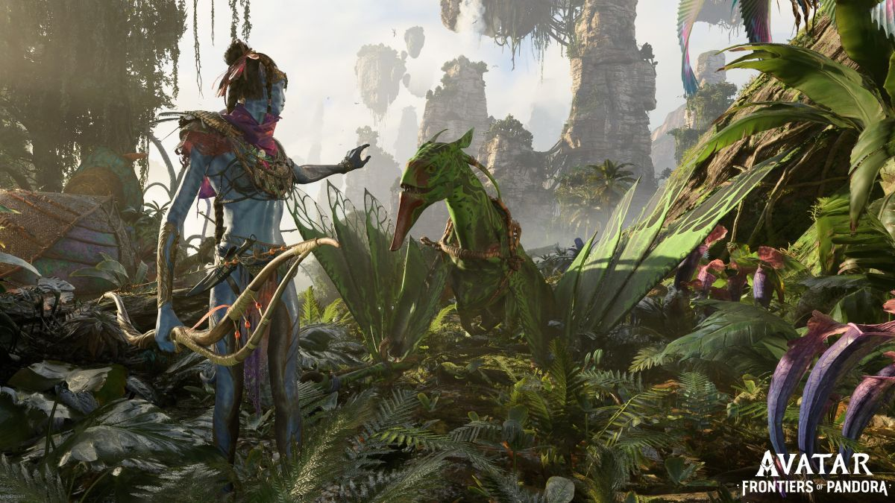
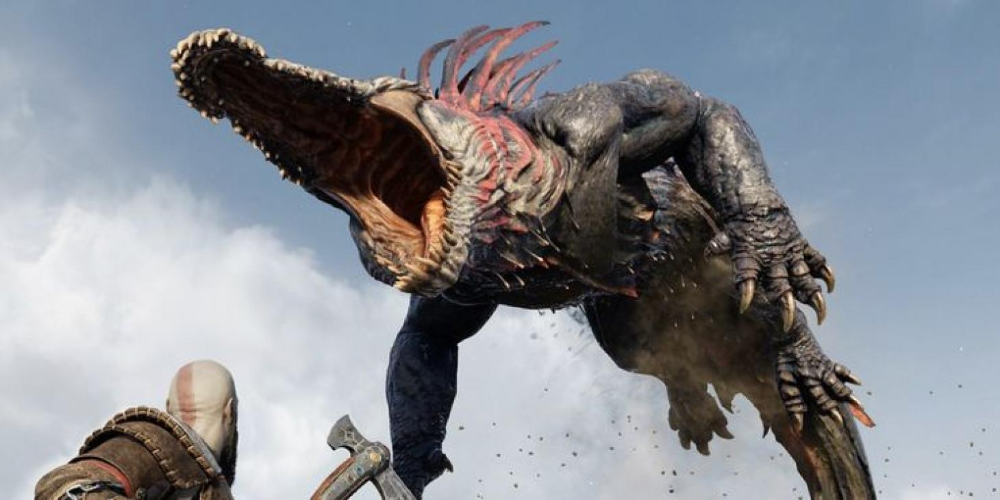
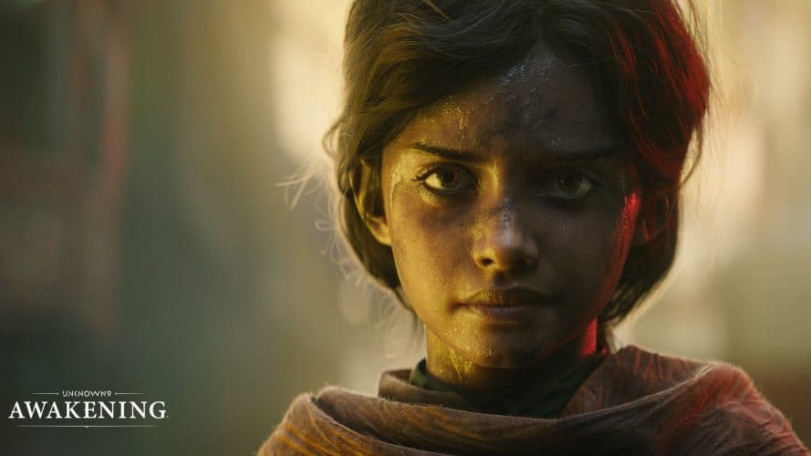
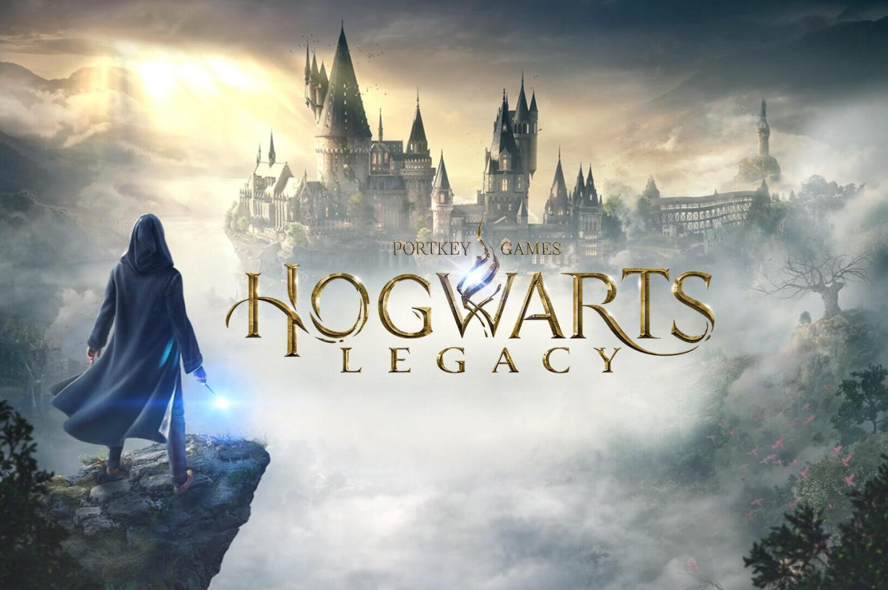

Avatar Frontiers of Pandora annoncé pour 2022 !
Annoncé à l'origine en 2017 par les équipes de Massive Entertainment, Avatar :
Frontiers of Pandora est un jeu d'action et d'aventure en monde ouvert à la première personne
, incluant sans doute aucun des éléments de RPG.
Le jeu s'inscrit dans la catégorie des triple A et bénéficie d'un budget à la hauteur de son ambition.
https://www.linternaute.com/hightech/jeux-video/2593265-avatar-frontiers-of-pandora-la-sortie-repoussee-a-2023-2024/

Ragnarok : la date de sortie viendrait-elle de fuiter ?
Élu jeu de l'année en 2018, l'épopée de Kratos s'est pourvu d'une suite à l'occasion du
PlayStation Showcase de septembre 2020. Suite très attendue par les joueurs,
Ragnarok est prévu pour 2022. Mais une récente rumeur a apporté plus de précisions
concernant la sortie du jeu.
https://www.59hardware.net/god-of-war-ragnarok-les-precommandes-sont-officiellement-disponibles/

Unknown 9, les fans attendent du gameplay !
Guidé par une équipe de développement chevronnée et diverse, le studio Reflector a
créé un tout nouvel univers narratif qu’il dévoile officiellement aujourd’hui.
L’équipe présente Unknown 9: Awakening, un jeu d’action-aventure à la 3ème personne axé sur la narration,
avec un aperçu de sa protagoniste, Haroona, et un avant-goût des capacités de cette dernière
dans le Revers.
https://www.actugaming.net/unknown-awakening-le-projet-de-reflector-entertainment-se-devoile-354349/

Hogwarts Legacy pourrait bien être le jeu le plus attendu de la décennie
Après un State of Play dédié au jeu japonais,
Sony remet le couvert cette semaine avec un autre événement,
cette fois-ci dédié au très attendu Hogwarts Legacy : l'Héritage de Poudlard.
Ce jeu de rôle en monde ouvert dans l'univers d'Harry Potter est très attendu par les joueurs
et les fans de la licence crée par J.K.
https://www.phonandroid.com/hogwarts-legacy-voici-comment-y-jouer-avant-la-sortie-officielle.html